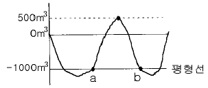
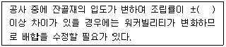
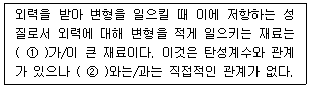
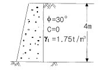
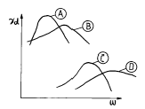
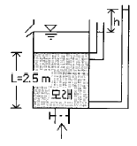
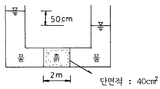

건설재료시험기사 (2004-09-05 기출문제)
1과목: 콘크리트공학
1. 콘크리트의 시방배합을 현장배합으로 수정할 때 고려할 것은?
- 슬럼프 값
- 골재의 표면수
- 골재의 마모
- 시멘트량
(정답률: 알수없음)

2. 단위 골재량의 절대부피가 0.8m3인 콘크리트에서 잔골재율(s/a)이 40%이고, 굵은골재의 비중이 2.65이면, 단위 굵은골재량은 얼마인가?
- 848kg/m3
- 1,044kg/m3
- 1,272kg/m3
- 2,120kg/m3
(정답률: 알수없음)
3. PSC 부재의 프리스트레스 감소원인 중 프리스트레스를 도입한 후 생기는 것은?
- PS 강선의 릴랙세이션
- 정착단 활동
- 마찰
- 콘크리트의 탄성변형
(정답률: 알수없음)
4. 굵은골재의 최대치수에 대한 압송관의 최소호칭치수의 설명으로 맞는 것은?
- 굵은골재의 최대치수가 20㎜일 때 압송관의 최소호칭 치수는 100㎜ 이하이다.
- 굵은골재의 최대치수가 25㎜일 때 압송관의 최소호칭 치수는 100㎜ 이상이다.
- 굵은골재의 최대치수가 20㎜일 때 압송관의 최소호칭 치수는 125㎜ 이하이다.
- 굵은골재의 최대치수가 25㎜일 때 압송관의 최소호칭 치수는 125㎜ 이상이다.
(정답률: 알수없음)
5. 알칼리 골재반응에 대한 설명 중 잘못된 것은?
- 포틀랜드시멘트 속의 알칼리 성분과 골재중에 있는 실리카와의 화학반응으로 나타난다.
- 콘크리트가 과도하게 팽창하여 균열이 발생하는 현상이 나타난다.
- 광물의 종류에 따라 알칼리-실리카 반응, 알칼리-탄산염 반응, 알칼리-실리케이트 반응으로 대별할 수 있다.
- 반응성 골재를 사용할 경우에는 1.0% 이하의 저알칼리형 시멘트를 사용한다.
(정답률: 알수없음)
6. 일반콘크리트의 비비기는 미리 정해둔 비비기 시간의 최소 몇 배 이상 계속해서는 안되는가?
- 2배
- 3배
- 4배
- 5배
(정답률: 알수없음)
7. 프리스트레스트 콘크리트에 대한 설명 중 잘못된 것은?
- 굵은골재 최대치수는 보통의 경우 25mm를 표준으로한다.
- 팽창성 그라우트의 재령 28일 압축강도는 최소 25MPa 이상 이어야 한다.
- 프리텐션 방식에서는 프리스트레싱 할 때 콘크리트 압축강도가 30MPa 이상이어야 한다.
- 팽창성 그라우트의 팽창률은 10% 이하로 한다.
(정답률: 알수없음)
8. 콘크리트의 건조수축에 대한 설명으로 옳은 것은?
- 물-시멘트비가 일정한 경우 건조수축은 단위시멘트량이 클수록 작다.
- 건조상태에 있어서 건조수축은 단위수량 보다 물-시멘트비의 영향이 크다.
- 단위수량이 동일한 경우 공기량이 클수록 건조수축은 크다.
- 시멘트의 화학성분 중 C3A의 함유량이 크면 건조수축은 작다.
(정답률: 알수없음)
9. 콘크리트의 중성화에 관한 설명 중 틀린 것은?
- 콘크리트 중의 수산화칼슘이 공기 중의 탄산가스와 반응하면 중성화가 진행된다.
- 중성화가 철근의 위치까지 도달하면 철근은 부식되기 시작한다.
- 공기중의 탄산가스의 농도가 높을수록 , 온도가 높을 수록 중성화 속도는 빨라진다.
- 중성화의 대책으로는 플라이애시와 같은 실리카질 혼화재를 시멘트와 혼합하여 사용하는 것이 좋다.
(정답률: 알수없음)
10. 포졸란(pozzolan) 반응에 대한 설명 중 틀린 것은?
- 미분말이어서 초기수화 발열량이 많아지고, 단위수량을 증가시킬 수 있다.
- 화산재, 규조토, 규산백토 등은 포졸란(pozzolan)반응을 하는 천연재료이다.
- 고로슬래그, 소성점토, 플라이애쉬 등은 포졸란(pozzolan) 반응을 하는 인공재료이다.
- 포졸란(pozzolan) 반응이란 자체는 수경성이 없으나 시멘트의 수화에 의하여 생기는 수산화칼슘과 서서히 반응하여 불용성화합물을 만드는 것을 말한다.
(정답률: 알수없음)
11. 치수가 20 cm × 40 cm 인 철근콘크리트 부재를 만들 경우 사용 가능한 최대의 굵은골재 최대치수는?
- 25 mm
- 40 mm
- 50 mm
- 60 mm
(정답률: 알수없음)
12. 하루 평균기온이 4℃ 인 기상조건하에서 콘크리트를 타설하고자 할 때 틀린 조치사항은?
- AE제 또는 AE감수제를 사용하여 배합하였다
- 양생 중의 콘크리트 온도가 약 10℃가 되도록 하였다
- 포틀랜드시멘트를 직접 가열하여 온도를 상승시킨 후 배합하였다
- 물과 골재의 혼합물의 온도가 약 30℃가 되도록 조치하여 배합하였다.
(정답률: 알수없음)
13. 콘크리트 표준시방서에 의한 콘크리트의 배합설계시 물-시멘트비는 무엇을 고려하여 정하는가?
- 강도, 내구성, 수밀성, 균열저항성
- 슬럼프, 반죽질기, 작업성, 성형성
- 타설온도, 타설높이, 타설속도, 타설시간
- 구조물의 치수, 철근간격, 최대골재크기
(정답률: 알수없음)
14. 수화열에 의한 매스콘크리트의 온도균열 저감대책으로 볼 수 없는 것은?
- 프리쿨링(pre-cooling)
- 알루미나시멘트의 사용
- 플라이애시시멘트의 사용
- 파이프쿨링(pipe-cooling)
(정답률: 알수없음)
15. 콘크리트용 골재의 저장과 취급에 관한 다음 설명 중 적절하지 않는 것은?
- 잔골재, 굵은골재 및 종류와 입도가 다른 골재는 각각 구분하여 저장해야 한다.
- 골재의 받아들이기, 저장 및 취급시에는 크고 작은 골재가 분리하지 않도록 주의하고 먼지, 잡물 등이 혼입하지 않도록 해야 한다.
- 겨울에는 빙설의 혼입이나 동결하지 않도록 해야한다.
- 여름에는 일광의 직사를 피할 수 있는 적절한 시설을 마련하고 반드시 기건상태로 관리하여야 한다.
(정답률: 알수없음)
16. 일반 콘크리트 치기에 대한 설명으로 잘못된 것은?
- 타설한 콘크리트를 거푸집안에서 횡방향으로 이동시켜서는 안된다.
- 한 구획내의 콘크리트 타설이 완료될 때까지 연속해서 타설해야 한다.
- 콘크리트는 그 표면이 한 구획내에서는 거의 수평이 되도록 타설하는 것을 원칙으로 한다.
- 콘크리트 타설 도중 표면에 떠올라 고인 블리딩수가 있을 경우는 콘크리트 표면에 도랑을 만들어 물을 제거한 후 콘크리트를 타설해야한다.
(정답률: 알수없음)
17. KS F 4009(레디믹스트 콘크리트)에 따른 콘크리트 받아들이기 검사에서 강도 시험에 대한 설명 중 틀린 것은?
- 강도시험은 원칙적으로 150m3에 대하여 1회 실시한다
- 1회 시험결과는 3개의 공시체를 제작하여 시험한 평균값으로 한다
- 1회의 시험결과는 구입자가 지정한 호칭강도의 85%이상, 3회의 시험결과 평균값은 호칭강도의 값 이상이어야 한다
- 받아들이기 검사용 시료는 레디믹스트 콘크리트를 제조하는 배치 플랜트에서 채취하는 것을 원칙으로 한다
(정답률: 알수없음)
18. 콘크리트 양생의 영향에 대하여 기술한 다음 설명 중 잘못된 것은?
- 습윤양생 기간을 길게 하면 중성화속도가 늦어진다.
- 습윤양생 기간을 길게 하면 장기강도가 커진다.
- 양생온도를 높게 하면 초기강도가 커진다.
- 양생온도를 높게 하면 장기강도의 증가율이 커진다.
(정답률: 알수없음)
19. 다음 중 수중콘크리트의 시공방법이 아닌 것은 ?
- 트레미
- 프리팩트 콘크리트
- 밑 열림 상자
- 숏크리트
(정답률: 알수없음)
20. 다음 중 철근부식방지가 주 목적인 보수공법과 거리가 먼것은?
- 전기방식공법
- 연속섬유시트접착공법
- 탈염공법
- 재알칼리화공법
(정답률: 알수없음)
2과목: 건설시공 및 관리
21. 터널공사에서 사용하는 천공(穿孔)방법중 번컷(Burn Cut)공법의 장점에 대한 설명중 옳지 않은 것은?
- 긴 구멍의 굴착이 용이하다.
- 폭파시 버력의 비산거리가 짧다.
- 폭약이 절약된다.
- 빈 구멍을 자유면으로 하여 연직폭파를 하므로 천공이 쉽다.
(정답률: 알수없음)
22. 토질이 양호하고, 부지에 여유가 있고 또 흙막이가 필요할 때는 나무 널말뚝 강널말뚝 등을 사용하는데 이런 경우는 다음의 어느 공법(工法)을 선택하면 가장 좋은가 ?
- 트랜치 컷(trench cut)
- 오픈 컷공법(open cut)
- 샌드드레인공법(sand drain)
- 웰포인트공법(well point)
(정답률: 알수없음)
23. 불도저(Bull - Dozer)의 규격을 나타내는 가장 일반적인 방법은?
- 전장비 중량
- 기관출력
- 견인력
- 등판능력
(정답률: 알수없음)
24. 중력댐의 시공후 관리상 댐내부에 설치하는 검사랑의 시공 목적과 관계가 가장 먼 것은?
- 제체의 활동방지
- 온도측정
- 콘크리트 내부의 균열검사
- 누수측정
(정답률: 알수없음)
25. 다음의 댐에 관한 기술중 옳지 않은 것은?
- 흙댐(Earth dam)은 기초가 다소 불량해도 시공할 수있다.
- 중력식 댐(Gravity dam)은 안전율이 가장 높고 내구성도 크나 설계이론이 복잡하다.
- 아아치 댐(Arch dam)은 암반이 견고하고 계곡 폭이 좁은 곳에 적합하다.
- 부벽식 댐(Buttress dam)은 구조가 복잡하여 시공이 곤란하고 강성이 부족한 것이 단점이다.
(정답률: 알수없음)
26. CPM기법 중 더미(dummy)에 대한 설명으로 적당한 것은 어느 것인가?
- 시간은 필요 없으나 자원을 필요로 하는 활동이다.
- 자원은 필요 없으나 시간은 필요한 활동이다.
- 자원과 시간이 필요 없는 명목상의 활동이다.
- 자원과 시간이 모두 필요한 활동이다.
(정답률: 알수없음)
27. 자연 함수비 8%인 흙으로 성토하고자 한다. 시방서에는 다짐한 흙의 함수비를 15%로 관리하도록 규정하였을때 매층마다 1m2당 몇kg의 물을 살수해야 하는가? (단, 1층의 다짐 후 두께는 20㎝이고,토량 변화율 C = 0.9이며 원지반상태에서 흙의 단위중량은 1.8t/m3이며, 소수점이하 3째자리에서 반올림하여 2째자리까지 구하시오.)
- 7.15kg
- 15.84kg
- 25.93kg
- 27.22kg
(정답률: 알수없음)
28. 흙막이공에서 어스 앵커 또는 내부 브레이스에 의한 버팀시스템이 사용될 때 연속 수평부재로 쓰이는 버팀 형식은?
- 토류판
- 버팀
- 엄지말뚝
- 띠장
(정답률: 알수없음)
29. 셔블계 굴삭기 가운데 수중작업에 많이 쓰이며, 협소한 장소의 깊은굴착에 가장 적합한 건설기계는?
- 클램쉘
- 파워셔블
- 파일드라이브
- 어스드릴
(정답률: 알수없음)
30. 폭우시 옹벽배면에는 침투수압이 발생되는데 이 침투수에 의한 중요한 영향중 옳지 않은 것은?
- 활동면에서의 양압력 증가
- 포화에 의한 흙의 무게 증가
- 옹벽 저면에서의 양압력 증가
- 수평 저항력의 증대
(정답률: 알수없음)
31. 0.7m3의 백호우(Back Hoe) 1대를 사용하여 6000m3의 기초 굴착을 시행할 때 굴착에 요하는 일수는 얼마인가? (단, Back Hoe의 cycle time은 24초, dipper 계수는 0.9, 토량 변화율(L)은 1.2, 작업능률은 0.8, 1일의 운전시간은 7시간이다.)
- 14일
- 12일
- 10일
- 17일
(정답률: 알수없음)
32. 요즘 지하층을 구축하면서 동시에 지상층도 시공이 가능한 역타공법(Top-down공법)이 현장에서 많이 사용된다. 역타공법의 특징 중 틀린 것은?
- 인접건물이나 인접지대에 영향을 주지않는 지하굴착 공법이다.
- 대지의 활용도를 극대화할 수 있으므로 도심지에서 유리한 공법이다.
- 지하층 슬래브와 지하벽체 및 기초 말뚝기둥과의 연결작업이 쉽다.
- 지하주벽을 먼저 시공하므로 지하수차단이 쉽다.
(정답률: 알수없음)
33. 3점 견적법에 따른 적정공사일수는? (단, 낙관일수=5일, 정상일수=7일, 비관일수=15일)
- 6일
- 7일
- 8일
- 9일
(정답률: 알수없음)
34. 토공기계에 대한 트레피커빌리티(trafficability)를 판단하는데 가장 흔히 사용되는 시험은?
- 콘(cone) 관입 시험
- 마샬(Marshall) 안정도 시험
- 소성지수 시험
- 액성한계 시험
(정답률: 알수없음)
35. 피어(Pier)기초란 구조물의 하중을 충분한 지지력을 얻을 수 있는 지반에 전달하기 위하여 수직공을 굴착하여 그 속에 현장 콘크리트를 타설하여 만들어진 주상(柱狀)의 기초를 의미한다. 다음중 피어기초의 특징이 아닌 것은?
- 소음이 없으므로 도회지 공사에 적합하다.
- 선단지지력을 확실히 할 수 있다.
- 말뚝의 본수를 작게할 수 있다.
- 작은 구조물의 기초에 적합하다.
(정답률: 알수없음)
36. 베인시험(Vane test)은 다음 중 주로 어떤 지반의 전단저항을 직접 측정하는 시험인가?
- 자갈층
- 모래층
- 굳은 점토층
- 연약 점토층
(정답률: 알수없음)
37. 아스팔트 콘크리트 기층의 다짐과 관계가 없는 장비는?
- 머캐덤 로울러
- 탠덤 로울러
- 타이어 로울러
- 양족식 로울러
(정답률: 알수없음)
38. 콘크리트 구조물에서 수축 줄눈을 가장 올바르게 설명한 것은?
- 콘크리트 슬래브의 수축 응력을 경감시키고, 불규칙한 균열의 발생을 최소로 줄이거나 막을 수 있도록 만든 줄눈
- 콘크리트 슬래브의 수축, 팽창을 쉽게 할 수 있도록 만든 줄눈
- 콘크리트 치기를 일시 중지해야 할 때 만든 줄눈
- 경화된 콘크리트 슬래브에 맞대어서 서로 이웃한 콘크리트 슬래브를 타설하므로써 만들어지는 줄눈
(정답률: 알수없음)
39. TBM(Tunnel Boring Machine)공법을 이용하여 암석을 굴착하여 터널단면을 만들려고 한다. TBM 공법의 단점이 아닌것은?
- 설비투자액이 고가이므로 초기 투자비가 많이 든다.
- 본바닥 변화에 대하여 적응이 곤란하다.
- 지반에 따라 적용범위에 제약을 받는다.
- lining 두께가 두꺼워야 한다.
(정답률: 알수없음)
40. 그림의 토적곡선의 a-b 구간에서 발생한 절토량을 인접한500(m2) 면적지역에 다짐상태로 성토시 성토높이를 구하면 약 몇 m 인가? (단, L=1.2, C=0.9)

- 1.7m
- 2.7m
- 3.8m
- 4.8m
(정답률: 알수없음)
3과목: 건설재료 및 시험
41. 콘크리트용 혼화재료에 관한 설명 중 틀린 것은?
- 고로슬래그시멘트를 사용한 콘크리트의 경우 목표 공기량을 얻기 위해서는 보통 콘크리트에 비하여 AE제의 사용량이 증가된다.
- 고로슬래그 미분말은 비결정질의 유리질 재료로 잠재 수경성을 가지고 있으며, 유리화율이 높을수록 잠재 수경성 반응은 커진다.
- 실리카흄은 0.02∼0.54㎛ 크기의 초미립자로 이루어진 비결정질 재료로 포졸란 반응을 한다.
- 팽창재를 사용한 콘크리트의 팽창률 및 압축강도는 팽창재 혼입량이 증가될수록 증가한다.
(정답률: 알수없음)
42. 아스팔트 혼합물의 겉보기 밀도가 2.28 이고 아스팔트의 양이 5%, 골재의 평균비중이 2.56일 때 공극률은 약 얼마인가? (단, 아스팔트 비중은 1임)
- 1%
- 2%
- 3%
- 4%
(정답률: 알수없음)
43. 강의 열처리 방법에는 풀림(thens), 불림(소준), 담금질(소입), 뜨임(소려) 등이 있다. 이 중에서 결정을 미세화 하고 균일하게 조정하기 위해 적당한 온도로 가열한 후 대기 중에서 냉각시키는 열처리 방법은?
- 풀림
- 불림
- 담금질
- 뜨임
(정답률: 알수없음)
44. 다음 중 석재의 성질 중 잘못된 것은?
- 석재의 비중은 조암광물의 성질, 비율, 공극의 정도 등에 따라 달라진다.
- 석재의 탄성계수는 후크(Hooke)의 법칙을 따른다.
- 석재의 강도는 압축강도가 특히 크며, 인장강도는 매우 작다.
- 석재 중 풍화에 가장 큰 저항성을 가지는 것은 화강암이다.
(정답률: 알수없음)
45. 콘크리트 배합에 관한 아래 표의 ( )에 들어갈 알맞은 수치는?

- 0.⑤
- 0.1
- 0.2
- 0.3
(정답률: 알수없음)
46. 대폭파 또는 수중폭파에서 동시폭파를 실시하기 위하여 뇌관 대신에 사용하는 것은?
- 도화선
- 도폭선
- 전기뇌관
- 첨장약
(정답률: 알수없음)
47. 다음 중 천연아스팔트의 종류가 아닌 것은?
- 록(Rock)아스팔트
- 샌드(Sand)아스팔트
- 블론(Blown)아스팔트
- 레이크(Lake)아스팔트
(정답률: 알수없음)
48. 플라스틱의 성질에 대한 설명으로 틀린 것은?
- 탄성계수가 작다.
- 강이나 콘크리트에 비하여 가볍기 때문에 이를 사용하는 구조물의 경량화가 가능하다.
- 내절연성 및 전기적 특성이 우수하다.
- 열에 의한 체적변화가 작다.
(정답률: 알수없음)
49. 시멘트 분말도가 큰 경우의 특징으로 맞지 않은 것은?
- 물과 접촉하는 면적이 넓어서 수화작용이 빠르고 조기강도가 크다.
- 블리딩이 적고 워커빌리티가 좋다.
- 시멘트량을 줄일 수 있다.
- 균열이 적어지고 내구성이 좋아진다.
(정답률: 알수없음)
50. 굵은골재의 노건조상태의 무게가 2,000g 이었고, 표면건조 포화상태의 무게가 2,090g, 수중에서의 무게가 1,290g 이었다면 표면건조포화상태의 비중은?
- 2.57
- 2.61
- 2.71
- 2.77
(정답률: 알수없음)
51. 건설공사 품질시험기준에서 콘크리트공사의 골재시험 빈도가 골재원마다, 1,000세제곱미터 마다 행하는 시험종목이 아닌 것은?
- 비중 및 흡수율
- 마모
- 안정성
- 염화물함유량
(정답률: 알수없음)
52. 아스팔트의 인화점 및 연소점 시험에 대한 설명으로 잘못된 것은?
- 인화점과 연소점은 ℃로 나타내며, 정수치로 보고 한다.
- 인화점은 연소점보다 3~6℃ 정도 높다.
- 일반적으로 가열속도가 빠르면 인화점은 떨어진다.
- 사람과 장치가 같을 때 2회의 시험결과에 있어 그 차가 8℃를 넘지 않을 때에 그 평균값을 취한다.
(정답률: 알수없음)
53. 다음 괄호 안에 들어갈 말로 맞게 연결된 것은?

- 강도(strength), 강성(stiffness)
- 강성(stiffness), 강도(strength)
- 인성(toughness), 강성(stiffness)
- 강도(strength), 인성(toughness)
(정답률: 알수없음)
54. 다음 설명이 올바르게 되어 있는 것은?
- 중용열 포틀랜드시멘트 : 토목 건축공사의 구조용 시멘트 또는 도장모르터용 등에 많이 사용된다.
- 플라이애쉬시멘트 : 댐공사등에 많이 사용된다.
- 고로시멘트 : 응결이 빠르므로 한중콘크리트에 적당하다.
- 조강포틀랜드시멘트 : 내화성이 우수하므로 내화물용으로 사용된다.
(정답률: 알수없음)
55. 콘크리트의 응결, 경화 조절의 목적으로 사용되는 혼화제에 대한 설명 중 틀린 것은?
- 콘크리트용 응결, 경화 조정제는 시멘트의 응결, 경화 속도를 촉진시키거나 지연시킬 목적으로 사용되는 혼화제이다.
- 촉진제는 그라우트에 의한 지수공법 및 뿜어붙이기 콘크리트에 사용된다.
- 지연제는 조기 경화현상을 보이는 서중콘크리트나 수송거리가 먼 레디믹스트 콘크리트에 사용된다.
- 급결제를 사용한 콘크리트의 초기 강도증진은 매우 크나 장기강도는 일반적으로 떨어진다.
(정답률: 알수없음)
56. 목재를 조성하고 있는 물질중에서 목질부에 가장 많은 양을 차지하고 있는 것은?
- 수렴제
- 수지
- 리그린
- 셀루로우즈
(정답률: 알수없음)
57. 상온에서 액체이며 동해를 입기에 가장 쉬운 폭약은?
- T.N.T
- 카알릿
- 니트로글리세린
- 초안폭약
(정답률: 알수없음)
58. 모래 A의 조립율이 3.43 이고, 모래 B의 조립율이 2.36인 모래를 혼합하여 조립율 2.80의 모래 C를 만들려면 모래A와 B는 얼마를 섞어야 하는가? (단, A : B 의 중량비)
- 41(%) : 59(%)
- 43(%) : 57(%)
- 40(%) : 60(%)
- 38(%) : 62(%)
(정답률: 알수없음)
59. 토목공사의 건설공사 품질시험기준에서 노체의 현장밀도 시험은 층다짐시 2차선기준으로 층별 몇m 마다 시행 하는가?
- 350m
- 450m
- 550m
- 650m
(정답률: 알수없음)
60. 시멘트 저장에 있어서 유의해야 할 사항 중 잘못 설명된 것은?
- 시멘트는 방습적인 구조로 된 사일로 또는 창고에 품종별로 구분하여 저장해야 한다.
- 포대에 든 시멘트는 15포대이상 쌓아선 안되며 장기간 저장할 경우에는 10포대이상 쌓아 올리면 안된다.
- 저장중에 약간이라도 굳은 시멘트를 사용해서는 안되며 3개월 이상 장기간 저장한 시멘트는 사용전에 품질시험을 한다.
- 시멘트의 온도가 너무 높을 때는 그 온도를 낮추어서 사용하여야 한다.
(정답률: 알수없음)
4과목: 토질 및 기초
61. 토목 섬유의 주요기능 중 옳지 않은 것은?
- 보강(Reinforcement)
- 배수(Drainage)
- 댐핑(Damping)
- 분리(Separation)
(정답률: 알수없음)
62. 내부마찰각이 30° , 단위중량이 1.9t/m3인 흙의 인장균열 깊이가 3m일 때 점착력은?
- 1.65t/m2
- 1.70t/m2
- 1.75t/m2
- 1.80t/m2
(정답률: 알수없음)
63. 그림과 같은 옹벽배면에 작용하는 토압의 크기를 Rankine의 토압공식으로 구하면?

- 4.2t/m
- 3.7t/m
- 4.7t/m
- 5.2t/m
(정답률: 알수없음)
64. 단면적 20㎝2, 길이 10㎝의 시료를 15㎝의 수두차로 정수 위 투수시험을 한 결과 2분 동안에 150㎝3의 물이 유출되었다. 이 흙의 Gs = 2.67이고, 건조중량이 420g 이었다. 공극을 통하여 침투하는 실제 침투유속 Vs는?
- 0.280㎝/sec
- 0.293㎝/sec
- 0.320㎝/sec
- 0.334㎝/sec
(정답률: 알수없음)
65. 압밀시험에 사용된 시료의 교란으로 인한 영향을 나타낸 것으로 옳은 것은?
- e-log P 곡선의 기울기가 급해진다.
- e-log P 곡선의 기울기가 완만해진다.
- 선행압밀하중의 크기가 증가하게 된다.
- 선행압밀하중의 크기가 감소하게 된다.
(정답률: 알수없음)
66. Jaky의 정지토압계수를 구하는 공식 Ko=1-sinø 가 가장 잘 성립하는 토질은?
- 과압밀점토
- 정규압밀점토
- 사질토
- 풍화토
(정답률: 알수없음)
67. 흙의 종류에 따른 아래 그림과 같은 다짐곡선들 중 옳은 것은?

- Ⓐ : ML, Ⓒ : SM
- Ⓐ : SW, Ⓓ : CL
- Ⓑ : MH, Ⓓ : GM
- Ⓑ : GC, Ⓒ : CH
(정답률: 알수없음)
68. 흙의 입도분포에서 균등계수가 가장 큰 흙은?
- 특히 모래자갈이 많은 흙
- 실트나 점토가 많은 흙
- 모래자갈 및 실트,점토가 골고루 섞인 흙
- 모래나 실트가 특히 많은 흙
(정답률: 알수없음)
69. 완전히 포화된 흙의 함수비가 48%이었다. 이때 흙의 습윤 단위 중량이 1.91t/m3이었다. 이 흙의 비중은 얼마인가?
- 3.39
- 3.09
- 2.74
- 2.69
(정답률: 알수없음)
70. 현장흙의 단위무게 시험 중 모래치환법에서 모래는 무엇을 구하려고 이용하는가?
- 시험구멍에서 파낸 흙의 중량
- 시험구멍의 체적
- 흙의 함수비
- 지반의 지지력
(정답률: 알수없음)
71. 주동토압을 PA, 수동토압을 PP, 정지토압을 P0라 할 때 토압의 크기 순서는?
- PA ＞ PP ＞ P0
- PP ＞ P0 ＞ PA
- PP ＞ PA ＞ P0
- P0 ＞ PA ＞ PP
(정답률: 알수없음)
72. 토질조사에서 사운딩(Sounding)에 관한 설명 중 옳은 것은?
- 동적인 사운딩 방법은 주로 점성토에 유효하다.
- 표준관입 시험(S.P.T)은 정적인 사운딩이다.
- 사운딩은 보링이나 시굴보다 확실하게 지반구조를 알아낸다.
- 사운딩은 주로 원위치 시험으로서 의의가 있고 예비조사에 사용하는 경우가 많다.
(정답률: 알수없음)
73. 점토층의 두께 5m, 간극비 1.4, 액성한계 50%이고 점토층 위의 유효상재 압력이 10t/m2에서 14t/m2으로 증가할때의 침하량은? (단, 압축지수는 흐트러지지 않은 시료에 대한 Terzaghi & Peck의 경험식을 사용하여 구한다.)
- 8㎝
- 11㎝
- 24㎝
- 36㎝
(정답률: 알수없음)
74. 그림과 같이 물이 위로 침투하는 수조에서 분사현상이 발생하기 위한 수두(h)는 최소 얼마를 초과하여야 하는가? (단, 수조 속에 있는 모래의 비중은 2.60, 간극비는 0.60, 모래층의 두께는 2.5m이다.)

- 1.0 m
- 1.5 m
- 2.0 m
- 2.5 m
(정답률: 알수없음)
75. 점착력이 전혀없는 순수 모래에 대하여 직접 전단시험을 하였더니 수직응력이 4.94㎏/㎝2일때 2.85㎏/㎝2의 전단저항을 얻었다. 이 모래의 내부마찰각은?
- 10°
- 20°
- 30°
- 40°
(정답률: 알수없음)
76. 크기가 1.5m×1.5m 인 직접기초가 있다. 근입깊이가 1.0m일 때, 기초가 받을 수 있는 최대허용하중을 Terzaghi 방법에 의하여 구하면? (단, 기초지반의 점착력은 1.5t/m2, 단위중량은 1.8t/m3, 마찰각은 20° 이고 이 때의 지지력 계수는 Nc=17.69, Nq=7.44, Nr=3.64 이며, 허용지 지력에 대한 안전율은 4.0으로 한다.)
- 약 29t
- 약 39t
- 약 49t
- 약 59t
(정답률: 알수없음)
77. 다음의 연약지반 개량공법중에서 점성토지반에 이용되는 공법은?
- 생석회 말뚝공법
- compozer공법
- 전기충격공법
- 폭파다짐공법
(정답률: 알수없음)
78. 그림에서 흙의 단면적이 40㎝2이고 투수계수가 0.1㎝/sec일 때 흙속을 통과하는 유량은?

- 1㎝3/sec
- 1m3/hr
- 100㎝3/sec
- 100m3/hr
(정답률: 알수없음)
79. Sand drain에 대한 Paper drain 공법의 장점 설명 중 옳지 않은 것은?
- 횡방향력에 대한 저항력이 크다
- 시공지표면에 sand mat가 필요 없다
- 시공속도가 빠르고 타설시 주변을 교란시키지 않는다
- 배수단면이 깊이에 따라 일정하다
(정답률: 알수없음)
80. 표준관입시험에 관한 설명 중 틀린 것은?
- 고정 piston 샘플러를 사용한다.
- 해머무게 64㎏ 이다.
- 해머낙하높이 76㎝ 이다.
- 30㎝ 관입에 필요한 낙하회수를 N치라 한다.
(정답률: 알수없음)